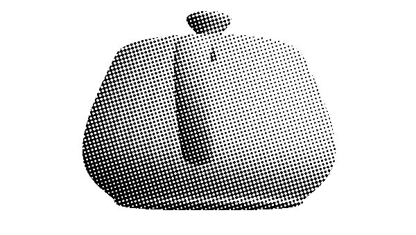

Overview
WebGL is 3D for the web. And as the name implies, it is related to OpenGL, the industry standard API for hardware accelerated 3D graphics. 3D is a lot more complicated than 2D. Not only do we have to deal with a full three dimensional coordinate system and all of the math that goes with it, but we have to worry a lot more about the state of the graphics context. Far, far more than the basic colors and transforms of the 2D context.
In 2D we draw shapes with paths then fill them with fill styles. It's very simple. 3D on the other hand, involves a very complex multi-stage process:
First, we have shapes in the form of geometry, lists of points in 3D space called "vectors". Next, we may have additional information for the shapes. Surface normals, for example, describe the direction that light bounces off of the shape. Then, we must set up lights and a camera. The camera defines point of view. The lights are just what they sound like, points in space that specify where the light is coming from. With all of this set up, we apply shaders.
Shaders take the camera, light, normals, and geometry as inputs to draw the actual pixels. (I realize this is a very simplified explanation of OpenGL, but please bear with me.) There are two kinds of shaders, one used to modify the vectors to create final light reflections and another that draws the actual pixels. This latter shader is known as a pixel shader, for obvious reasons.
Shaders are essentially tiny programs written in a special OpenGL language that looks like a form of C. This code is not very easy to write because it must be massively parallel. A modern graphics processor is essentially a special super parallel multi-core chip that does one thing very efficiently: render lots of pixels very fast.
Shaders are the power behind modern graphics but they are not easy to work with. On the plus side your app can install its own shaders to do lots of amazing things, but the minus side is your app has to install its own shaders. There are no shaders pre-built into the WebGL standard. You must bring your own.
The above is a simplified version how OpenGL ES 2.0 and OpenGL 3 work (older versions of OpenGL did not have shaders.) It is a complex but flexible system. WebGL is essentially the same, just with a JavaScript API instead of C.
We simply don't have time for me to teach you OpenGL. We could easily fill up an entire week-long conference learning OpenGL. Even if we did have the time, you probably wouldn't write code this way. It would take you thousands of lines of to make a fairly simple game. Instead, you would use a library or graphics engine to do the low-level stuff for you, letting you concentrate on what your app actually does. In the WebGL world, the most popular such library is an open source project called ThreeJS. It greatly simplifies building interactive 3D apps and comes with its own set of reusable shaders. That is what I'm going to teach you today: ThreeJS.
Examples
First a few examples.

This is a simple game called Zombies vs Cow where you use the arrow keys to make the cow avoid getting eaten by the zombies. It is completely 3D and hardware accelerated. It looks much like a professional game that you might see on the Wii, but it is done entirely in a web browser.
Here is another example that gives you a Google Earth like experience without installing a separate app.
Here is another example that does interesting visualizations of audio with 3D.

All of these were created with Three.JS and WebGL
Browser Support
Before we dive in, a word on browser support. Opera, FireFox and all of the desktop WebKit based browsers support WebGL. Typically they map down to the native OpenGL stack. The big hole here is Internet Explorer. While IE 10 has excellent support for 2D canvas, it does not support WebGL. Furthermore, Microsoft has not announced any plans to support it in the future. It's unclear what effect this will have in the Windows 8 world where 3rd party browsers and plugins are disallowed.
On the mobile side there is virtually, no support for WebGL. iOS supports it but only as part of iAd, not in the regular browser. This suggests that Apple may add it in the future, however. Some Android phones support WebGL, but usually only if an alternate browser like FireFox or Opera is installed. Since desktop Chrome supports WebGL, and Google is making Chrome the Android default, hopefully we will get WebGL as standard on Android as well. The only mobile device that ships with good WebGL support out of the box is actually the BlackBerry Playbook. So while support isn't great on mobile it will probably get better over the next year or so. WebGL will be a part of the future web standards and has some big names behind it, so now is a good time to get started.
A ThreeJS Template
ThreeJS is an open source library created by creative coder extraordinaire, Mr. Doob. His real name is Ricardo Cabello, but if you search for Mr. Doob you will find his cool graphics hacks going back at least a decade. ThreeJS is a library that sits on top of WebGL. It automates the annoying things so you can focus on your app. To make it even easier to work with Jerome Etienne, has created a boiler plate builder that will give you a headstart. It fills in all of the common things like the camera, mouse input, and rendering, so that you can start with a working ThreeJS application.
Let's see how easy it can be. Go to the ThreeJS Boiler Plate Builder and download a new template. Unzip it and open the index.html page in your browser to ensure it works. You should see something like this:

Now open up the index.html file in your text editor. Notice that the template is pretty well documented. Let's start with the init function.
// init the scene
function init(){
if( Detector.webgl ){
renderer = new THREE.WebGLRenderer({
antialias : true, // to get smoother output
preserveDrawingBuffer : true // to allow screenshot
});
renderer.setClearColorHex( 0xBBBBBB, 1 );
// uncomment if webgl is required
//}else{
// Detector.addGetWebGLMessage();
// return true;
}else{
renderer = new THREE.CanvasRenderer();
}
renderer.setSize( window.innerWidth, window.innerHeight );
document.getElementById('container').appendChild(renderer.domElement);
First, the template initializes the system. It tries to create a WebGL renderer because ThreeJS actually supports some other backends like 2D canvas. For this we only want WebGL. If it can't create a WebGLRenderer it will fall back to 2D canvas. Though canvas will be much slower it might be better than showing nothing. It's up to you.
Then, it sets the size of the canvas and adds it to the page as a child of container (a DIV declared in the document.)
// add Stats.js - https://github.com/mrdoob/stats.js
stats = new Stats();
stats.domElement.style.position = 'absolute';
stats.domElement.style.bottom = '0px';
document.body.appendChild( stats.domElement );
Next, it creates a Stats object and adds it to the scene. This will show us how fast our code is running.
// create a scene
scene = new THREE.Scene();Finally, it creates a Scene. ThreeJS uses a tree structure called a scene graph. The scene is the root of this tree. Everything we create within the scene will be a child node in the scene tree.
// put a camera in the scene
camera = new THREE.PerspectiveCamera(35, window.innerWidth / window.innerHeight, 1, 10000 );
camera.position.set(0, 0, 5);
scene.add(camera);Next comes the camera. This is a perspective camera. Generally you can leave these values alone, but it is possible to change the position of the camera if you wish.
// create a camera contol
cameraControls = new THREEx.DragPanControls(camera)DragPanControls is a utility object which will move the camera around as you drag the mouse. You can remove it if you want some other kind of control.
// transparently support window resize
THREEx.WindowResize.bind(renderer, camera);
// allow 'p' to make screenshot
THREEx.Screenshot.bindKey(renderer);
// allow 'f' to go fullscreen where this feature is supported
if( THREEx.FullScreen.available() ){
THREEx.FullScreen.bindKey();
document.getElementById('inlineDoc').innerHTML += "- f for fullscreen";
}Normally we have to handle window resizing manually, but the Threex.WindowResize object (provided by the template, not ThreeJS) will handle it for us. It will resize the scene to fit the window.
The next lines add a fullscreen mode using the 'f' key and a screenshot using the 'p' key.
Okay, now that we are past the boiler plate, we can add a shape to the scene. We will start with a torus, which is a donut shape. ThreeJS has support for several standard shapes including the torus.
// here you add your objects
// - you will most likely replace this part by your own
var geometry = new THREE.TorusGeometry( 1, 0.42 );
var material = new THREE.MeshNormalMaterial();
var mesh = new THREE.Mesh( geometry, material );
scene.add( mesh );An object in the scene is called a mesh. A mesh is composed of two parts: the geometry and the material. The template uses torus geometry and standard normal material, which always reflects light perpedicularly to the surface of the geometry. It reflects light but doesn't have a set color. This is how the template creates the mesh and adds it to the scene.
// animation loop
function animate() {
// loop on request animation loop
// - it has to be at the begining of the function
// - see details at http://my.opera.com/emoller/blog/2011/12/20/requestanimationframe-for-smart-er-animating
requestAnimationFrame( animate );
// do the render
render();
// update stats
stats.update();
}
Now let's move down to the animate function. animate calls itself with requestAnimationFrame (which we learned about in the animation chapter,) invokes render() and updates the stats.
// render the scene
function render() {
// update camera controls
cameraControls.update();
// actually render the scene
renderer.render( scene, camera );
}The render function is called for every frame of animation. First, it calls update on the camera controls to enable camera movement in response to mouse and keyboard input. Then, it calls renderer.render to actually draw the scene on the screen.
That's it. Here's what it looks like:
Customizing the Template
Now let's customize it a bit. Every object in the scene is capable of basic scale, rotate, and position transformations. Let's rotate the torus with mesh.rotation.y = Math.PI/2. Note that rotations are in radians, not degrees. Math.PI/2 is 90 degrees.
var geometry = new THREE.TorusGeometry( 1, 0.42 );
var material = new THREE.MeshNormalMaterial();
var mesh = new THREE.Mesh( geometry, material );
mesh.rotation.y = Math.PI/2; //90 degrees
Now let's comment out the torus and replace it with something more complex.
ThreeJS can use pre-fab models as well as generated ones like the torus. The Utah Teapot is the "Hello
World" of the graphics world, so let's start with that. The teapot geometry is
encoded as a JSON file. We download teapot.js from the examples
repo and place it in the same directory as index.html. Next, we
load it with THREE.JSONLoader().load(). When it finishes loading, we
add it to the scene as a new mesh model, again employing a standard normal material.
(teapot.js originally came from Jerome's repo.)
//scene.add( mesh );
new THREE.JSONLoader().load('teapot.js', function(geometry) {
var material = new THREE.MeshNormalMaterial();
var mesh = new THREE.Mesh( geometry, material );
scene.add( mesh );
teapot = mesh;
});Now let's add some animation and make the teapot rotate on each frame. We simply set a teapot variable and adjust its rotation by 0.01 on each frame.
// update camera controls
cameraControls.update();
teapot.rotation.y += 0.01;Shader Effects
Finally, we will add some post-processing effects. They are called post-processing because they happen after the main rendering phase. These parts of the ThreeJS API are somewhat experimental and not documented well, but I'm going to show them to you anyway because they are very powerful. Post-processing requires adding more scripts to our page. We'll need ShaderExtras.js, RenderPass.js, BloomPass.js, ShaderPass.js, EffectComposer.js, DotScreenPass.js, and MaskPass.js.
<script src="vendor/three.js/ShaderExtras.js"></script>
<script src="vendor/three.js/postprocessing/RenderPass.js"></script>
<script src="vendor/three.js/postprocessing/BloomPass.js"></script>
<script src="vendor/three.js/postprocessing/ShaderPass.js"></script>
<script src="vendor/three.js/postprocessing/EffectComposer.js"></script>
<script src="vendor/three.js/postprocessing/DotScreenPass.js"></script>
<script src="vendor/three.js/postprocessing/MaskPass.js"></script>
We begin by creating a new function called initPostProcessing(). Inside it we will create an effect composer.
function initPostProcessing() {
composer = new THREE.EffectComposer(renderer);Next, we will add a render pass which will render the entire scene into a texture image. We have to tell it that it won't be rendering to the screen, then add it to the composer.
renderModel = new THREE.RenderPass(scene,camera);
renderModel.renderToScreen = false;
composer.addPass(renderModel);Next, we will create a dot screen pass. These are some good default values but you can adjust them to get different effects. This pass will go to the screen so we will set renderToScreen to true and add it to the composer.
var effectDotScreen = new THREE.DotScreenPass(
new THREE.Vector2(0,0), 0.5, 0.8);
effectDotScreen.renderToScreen = true;
composer.addPass(effectDotScreen);Now, we need to update the render function. Instead of calling renderer.render() we will call renderer.clear() and composer.render();
// actually render the scene
//renderer.render( scene, camera );
//alt form
renderer.clear();
composer.render();We also have to call initPostProcessing as the last line of the init function.
initPostProcessing();Here's what it looks like. Crazy huh!

Just for curiosity, if we open up ShaderExtras.js we can see the actual shader math, which creates the dot pattern and generates the final color for each pixel.
fragmentShader: [
"uniform vec2 center;",
"uniform float angle;",
"uniform float scale;",
"uniform vec2 tSize;",
"uniform sampler2D tDiffuse;",
"varying vec2 vUv;",
"float pattern() {",
"float s = sin( angle ), c = cos( angle );",
"vec2 tex = vUv * tSize - center;",
"vec2 point = vec2( c * tex.x - s * tex.y, s * tex.x + c * tex.y ) * scale;",
"return ( sin( point.x ) * sin( point.y ) ) * 4.0;",
"}",
"void main() {",
"vec4 color = texture2D( tDiffuse, vUv );",
"float average = ( color.r + color.g + color.b ) / 3.0;",
"gl_FragColor = vec4( vec3( average * 10.0 - 5.0 + pattern() ), color.a );",
"}"
].join("\n")A Few More Details
Much like OpenGL, WebGL doesn't support text directly. Instead, you must draw text using a 2D canvas, then add it as a texture onto a plane. (see WebGL Factor's explanation.)
There is a library for building quick GUIs called dat-gui. The project page is here.
There are model loaders for a lot of formats. You will probably use the Collada or JSON loaders. (DAE files are for Collada). Some are just geometry, some include textures and animation, like the monster loader. Loaders are important because most complex geometry won't be created in code, instead you would use geometry created by someone else, probably using a 3D modeler tool like Blender or Maya.
For the most part, any general performance tips for OpenGL apply to WebGL. For example, you should always cache geometry and materials on the GPU.
CreativeJS has lots of good examples of 2D Canvas and WebGL.
In the next chapter, you will do a hands on lab in which you will create a new app with a car that drives around on a large grassy plain under a starry sky.